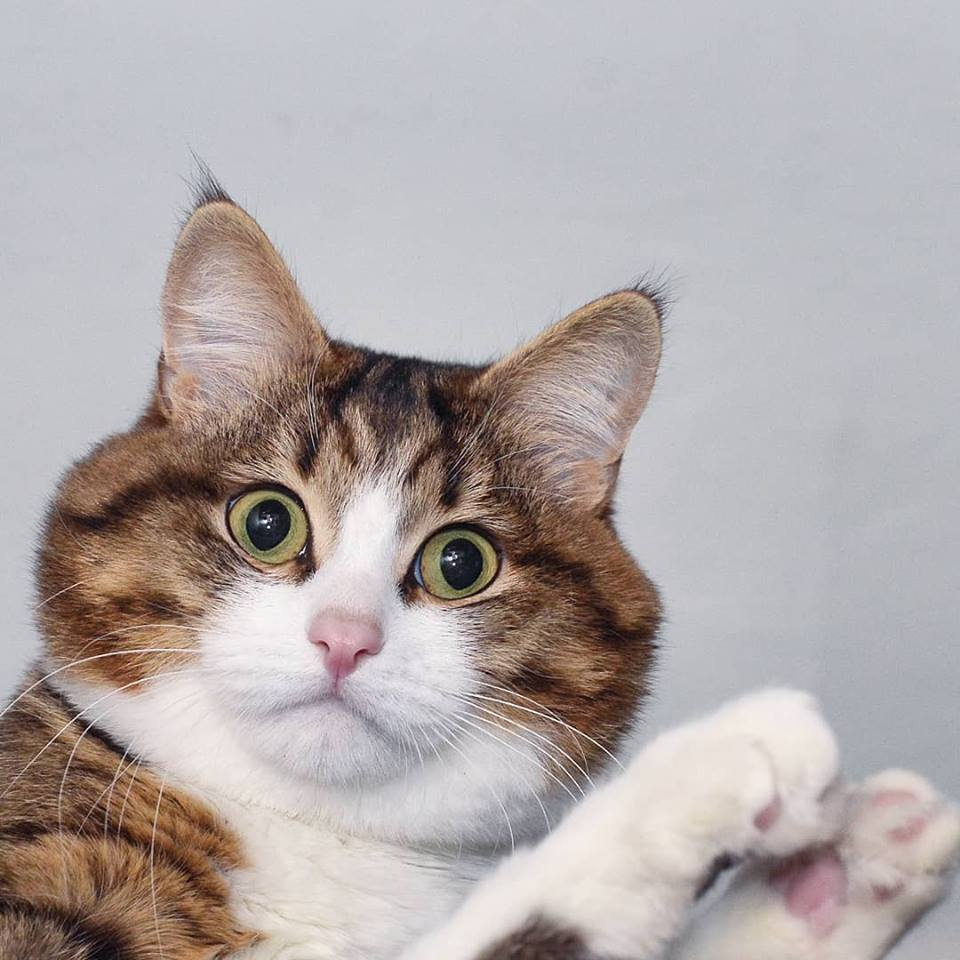

Mèo

Đây là con mèo mâp địt
Những thứ mèo thích ăn
- Cá
- Beefsteak
- Bột ăn cho mèo
Những thứ mèo sợ
- Sấm sét
- Sợ chó
- Sợ dơ
- Mèo:
- là mèo nhà để phân biệt với các loài trong họ Mèo khác, là động vật có vú nhỏ và ăn thịt.
Người ta tin
rằng tổ tiên trung gian gần nhất trước khi được thuần hóa của chúng là mèo rừng châu Phi (Felis silvestris
lybica).ádasd